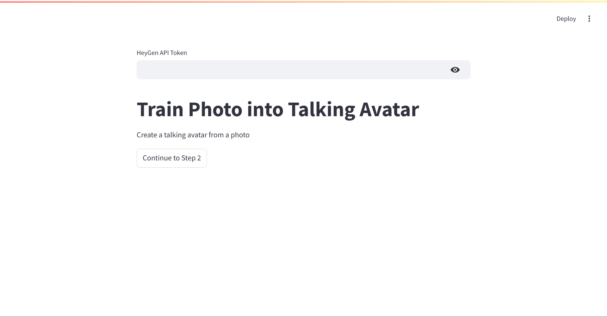
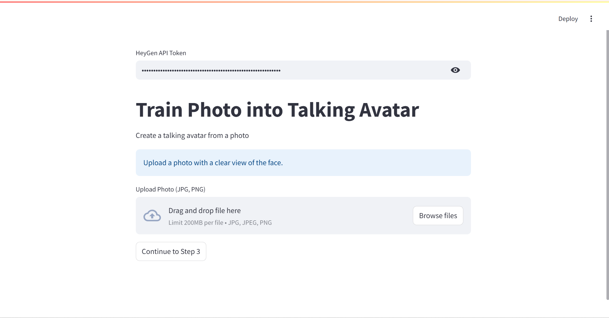
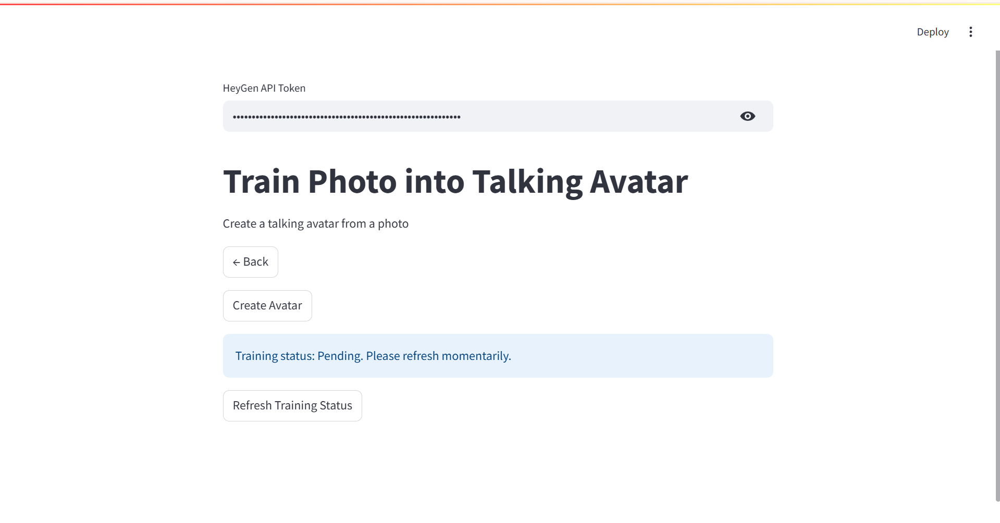
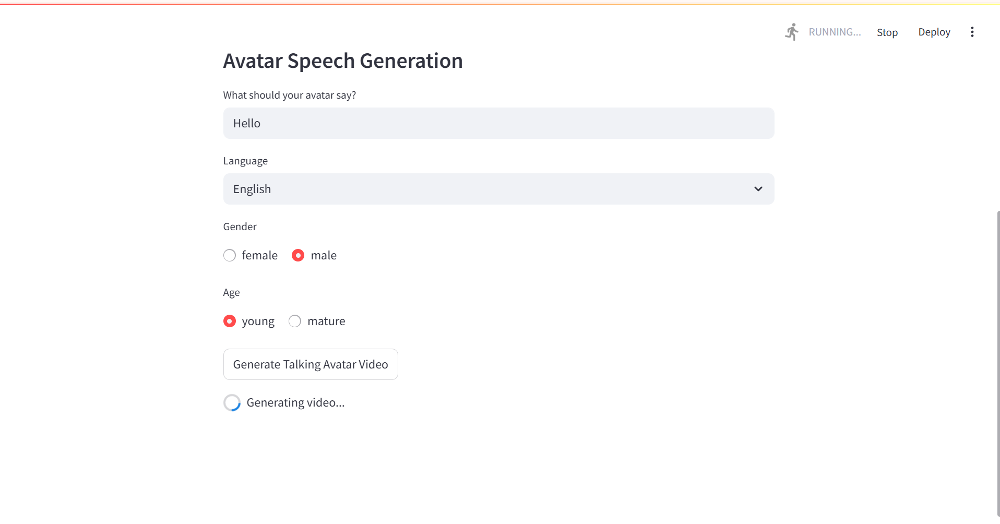

In recent decades and especially the past few years, countless advancements have been made in the field of artificial intelligence (AI). Most notably, large language models (LLMs), such as ChatGPT and Gemini, can hold flawless conversations and provide accurate, up-to-date information. These LLMs are trained using neural networks composed of hundreds of layers of neurons as well as many terabytes of data.
However, there are many uses of neural networks that result in the generation of information that is not text-based. For instance, virtual avatar tools allow for the production of realistic video when given visual and/or audio information about a person. Videos that are generated using such tools can be used to convey information in a lifelike manner without it needing to be directly stated. Companies such as HeyGen and Synthesia are paving the way for such technologies to become more widespread.
There are many use cases for virtual avatars, most of which fall under a couple main concepts:
They can be used to easily transmit information to the public in video format, which many find more engaging than reading text.
fun facts in short-form videos
news broadcasts
online courses
advertisements
They can be used to attend meetings in lieu of an actual person
Due to the relative complexities of creating and training a new AI, I used HeyGen’s API in order to create the videos that appear above. The API allows for the creation of short (max. 2000 characters) videos given an image of a human face and what the user wants the face to appear to say, making it perfect for creating short-form content. The API is also easily accessible, as API keys can be obtianed for free by signing up for a HeyGen account. The user is able to choose between two of the most commonly spoken languages (English and Chinese) as well as between male or female and young or mature voices. The voices were obtained from HeyGen’s voice library. I used Grok 3 to generate realistic-looking faces in order to demonstrate the technology in an ethical manner. I used the streamlit library with Python to create a user interface to allow for easy usage of the API. Streamlit allows for the development of simple, interactive programs without needing to build a complex frontend.

front page

photo upload page

avatar training page

video generation page
Advised by Guang Cheng - Professor of Statistics and Data Science - University of California, Los Angeles
Video generated by HeyGen API